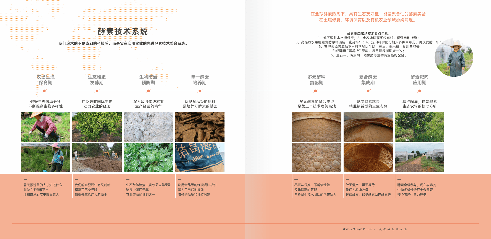
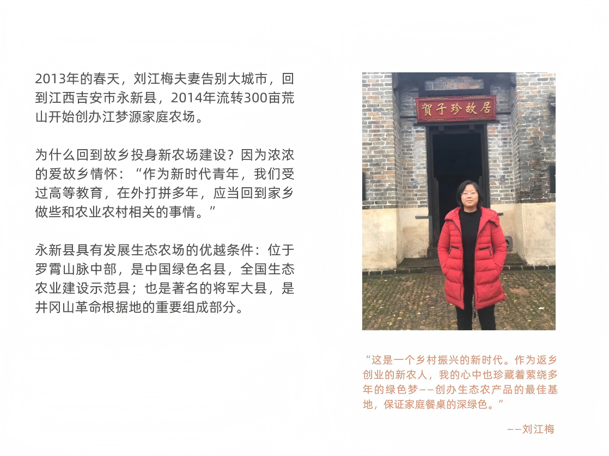
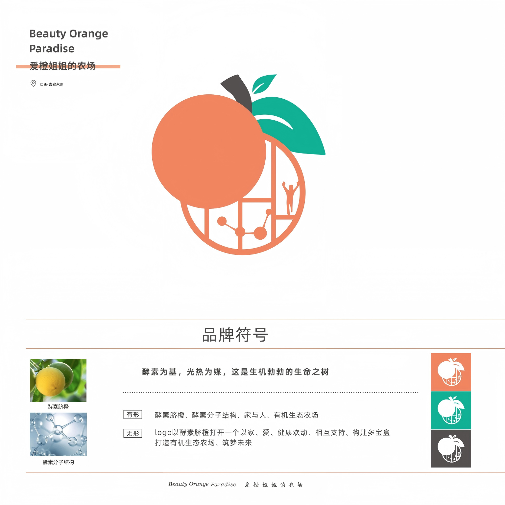
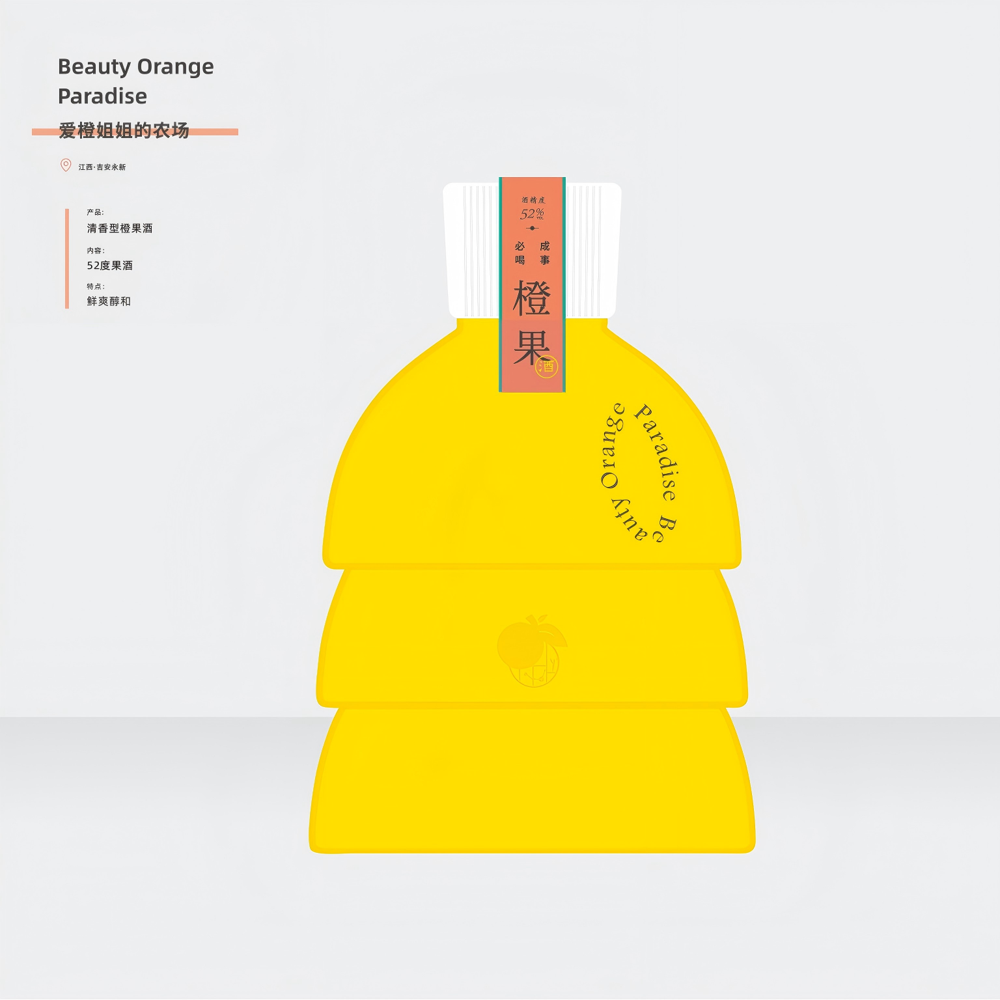
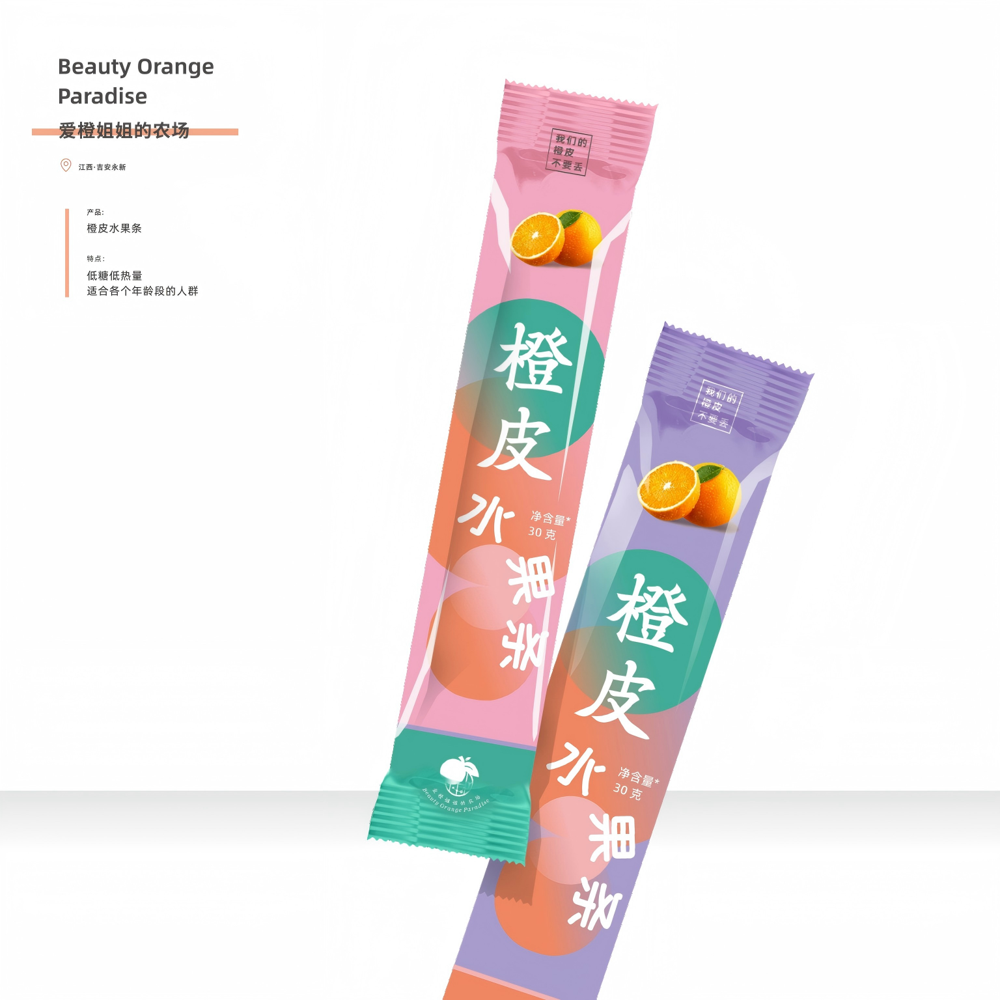
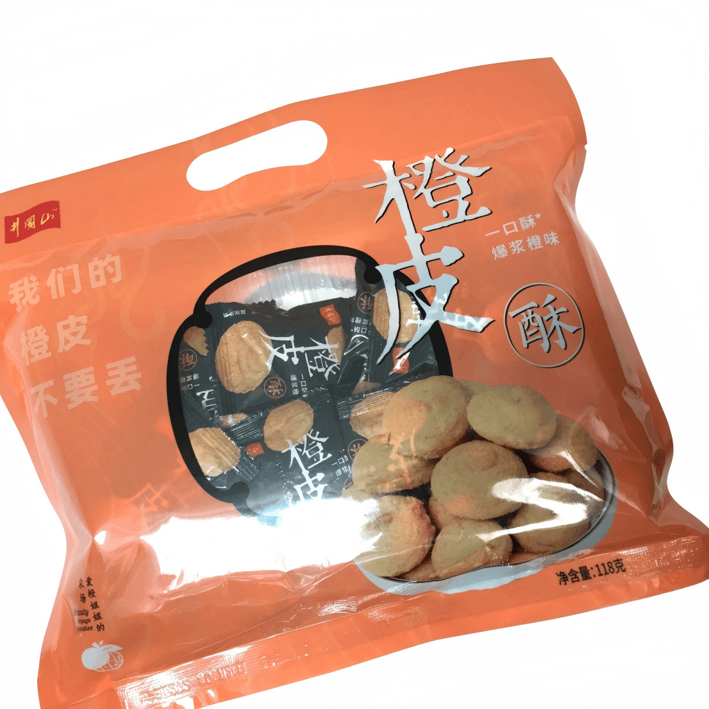
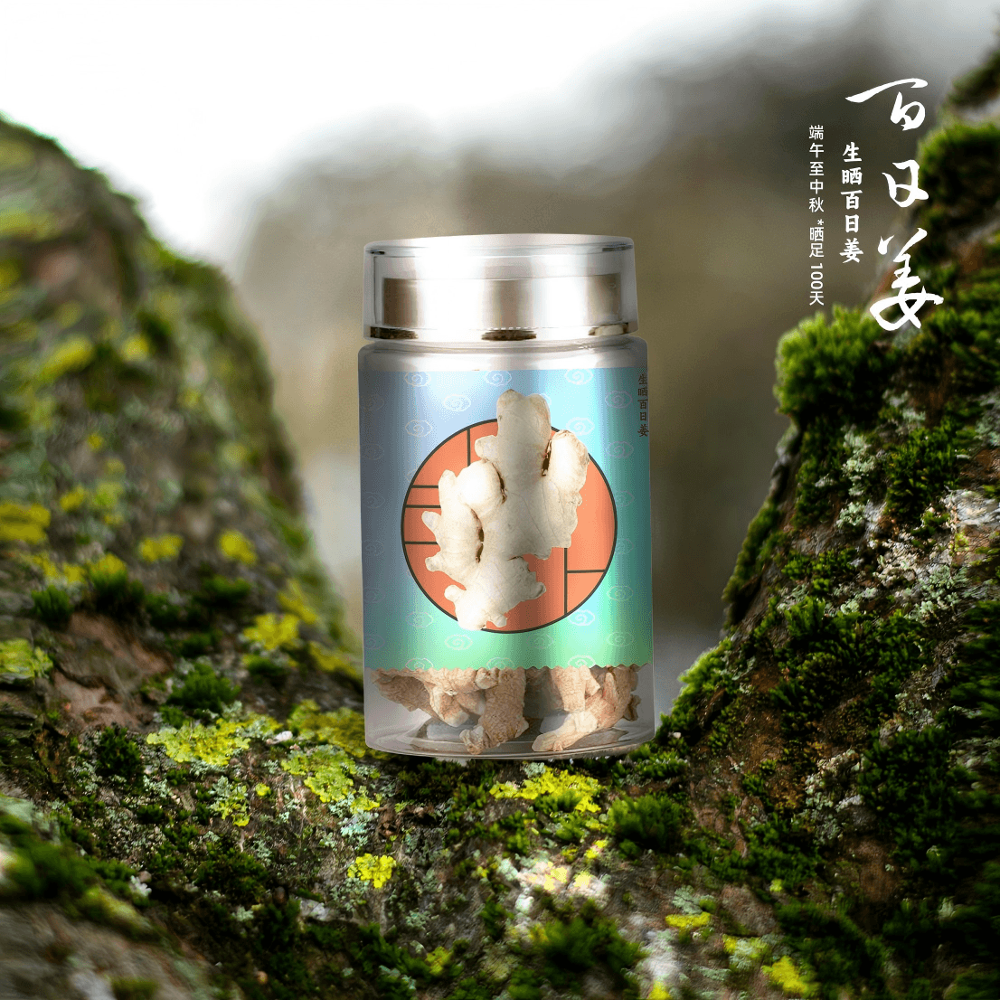
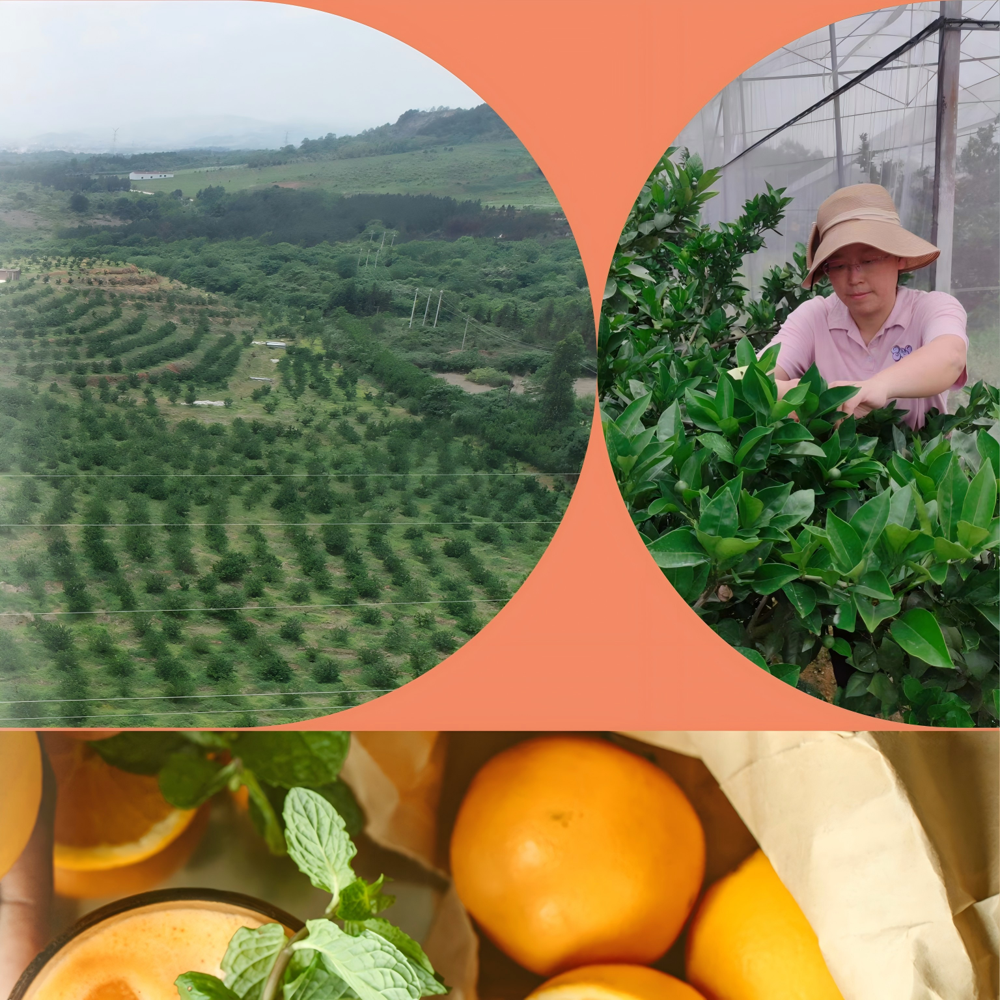
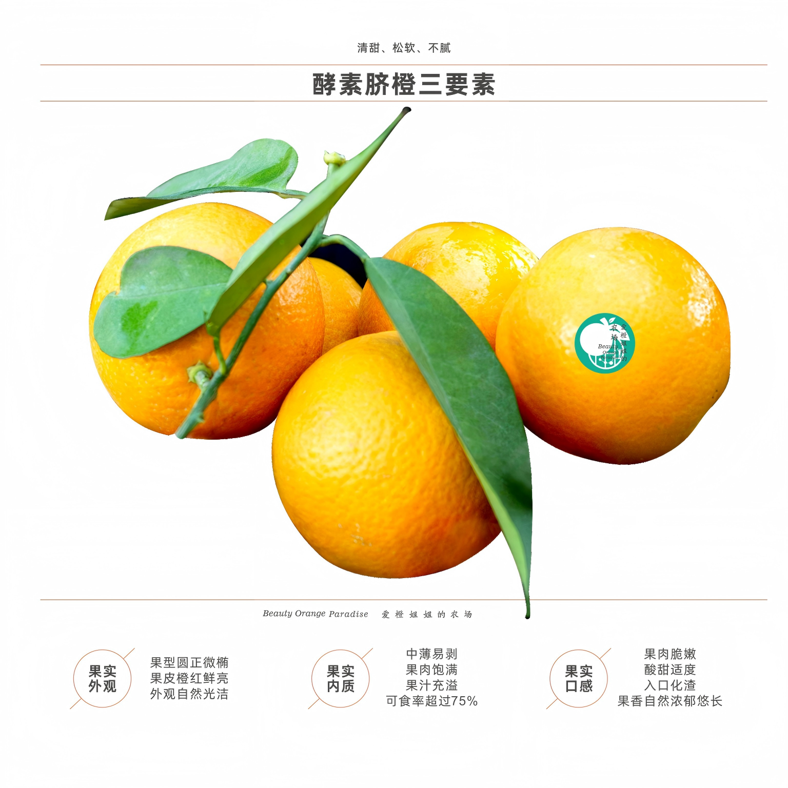

初心：从城市到乡村
2013年，一个勇敢的决定改变了一切。创始人刘江梅放弃了城市的工作机会，毅然回到家乡江西永新，开始了她的农业创业之路。
投资千万元，她建立了一个生态示范农场，将现代化的农业技术与传统的生态种植理念相结合。这不仅仅是一个农场，更是一个梦想的起点。
"像养育孩子一样养育一片会呼吸的橙林"——这是爱橙姐姐的信念，也是整个品牌的灵魂。

这是一个回乡创业新农人的故事

2013年，一个勇敢的决定改变了一切。创始人刘江梅放弃了城市的工作机会，毅然回到家乡江西永新，开始了她的农业创业之路。
投资千万元，她建立了一个生态示范农场，将现代化的农业技术与传统的生态种植理念相结合。这不仅仅是一个农场，更是一个梦想的起点。
"像养育孩子一样养育一片会呼吸的橙林"——这是爱橙姐姐的信念，也是整个品牌的灵魂。
每一棵橙子树都不是生产线上的产品代码，而是一个有待我们认识、理解并陪伴其生长的独特生命。 —— 爱橙姐姐

在爱橙姐姐的农场，每一个橙子都被赋予了完整的使命。果肉鲜食，果皮则可以泡茶、制香、做糕点——这就是"一果两吃"的创新理念。
这不仅仅是一种产品策略，更是一种生活哲学：珍惜自然资源，实现产品价值的最大化。
从橙果酒到现泡橙C饮料，从橙皮酥到工艺橙皮茶，每一款产品都承载着对品质的追求和对自然的敬畏。
ONE FRUIT, TWO USES

橙果酒
现泡橙C
橙皮茶
橙皮酥果肉鲜食，果皮深加工——实现100%资源利用

爱橙姐姐的农场独创了酵素微生物复合菌营养液发酵技术，开创了绿色酵素橙种植的先河。
通过自研酵素营养液配合生物防治、地下水滴灌系统，实现了零化学农药的生态种植。
鸡鸭在果园里自由活动，防虫板守护着每一棵果树，酵素发酵让土壤充满生机——这是一个完整的生态循环系统。

七大产品系列，覆盖了从饮品到零食、从日用到养生的完整产品矩阵。
清香型橙果酒、0蔗0脂的现泡橙C、暖胃的橙皮水果茶、香脆的橙皮酥、蜜饯橙皮丁、工艺橙皮茶，以及冬季限定的姜茶系列。
每一款产品都经过精心研发，确保保留酵素脐橙的天然营养，同时满足现代消费者的多样化需求。